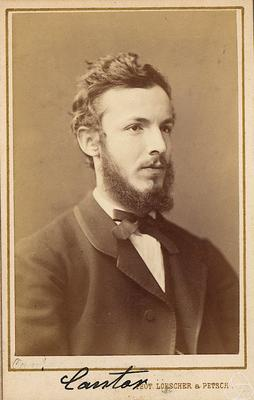

Georg Cantor estabished the mathematical notion of infinity, and the mathematics that allowed for its understanding - Set Theory. His worked showed, among other things, of the different sizes of infinity, eventually leading to Gödel's incompleteness theorem and Cohen's proof of independance of the Continuum Hypothesis.
Though his work is an intergral mart of modern mathematics, it received much hostility in his time. Unfortunetly, his life was also accompanied by personal tragedy.